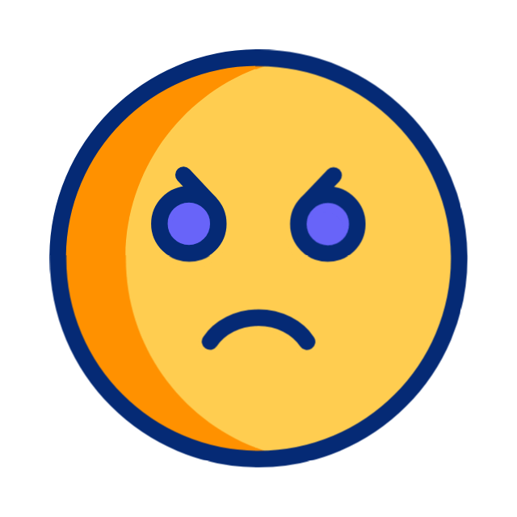
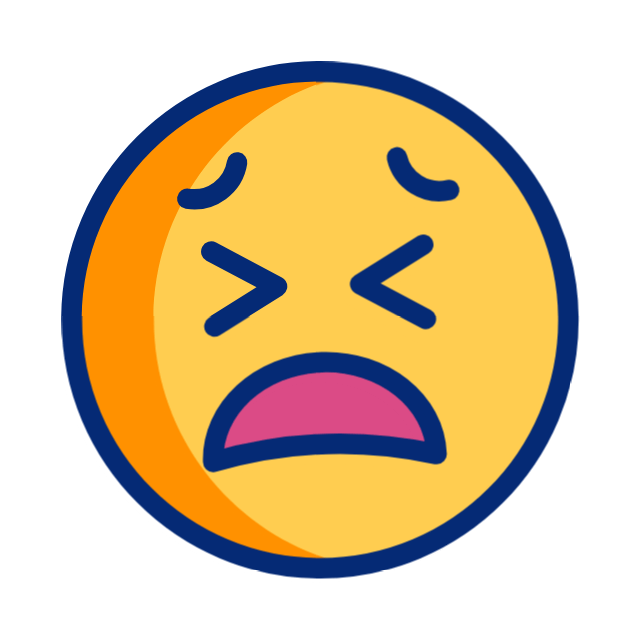
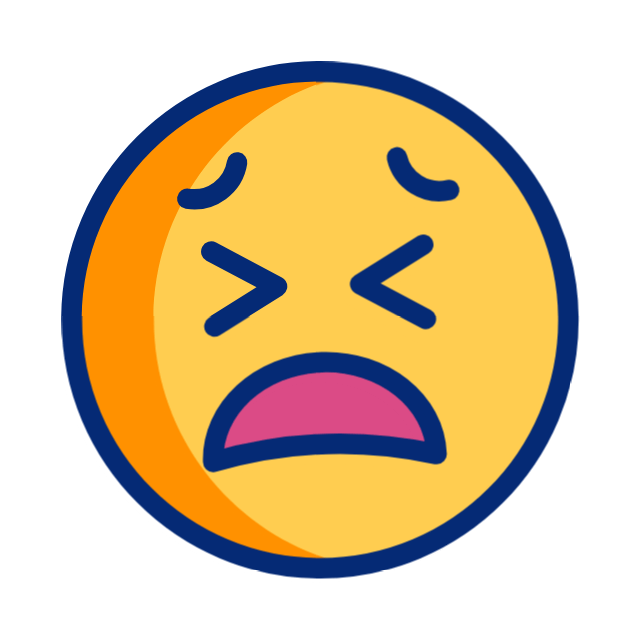
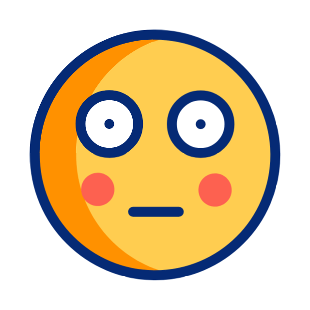
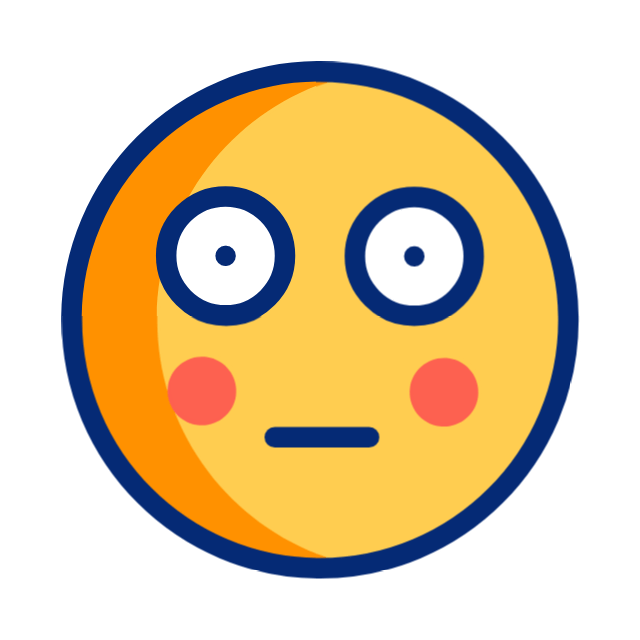

Detección de Emociones
Esta es una prueba de detección de emociones basada en la salida de parámetros de clmtrackr.

 

 

Esta es una prueba de detección de emociones basada en la salida de parámetros de clmtrackr.